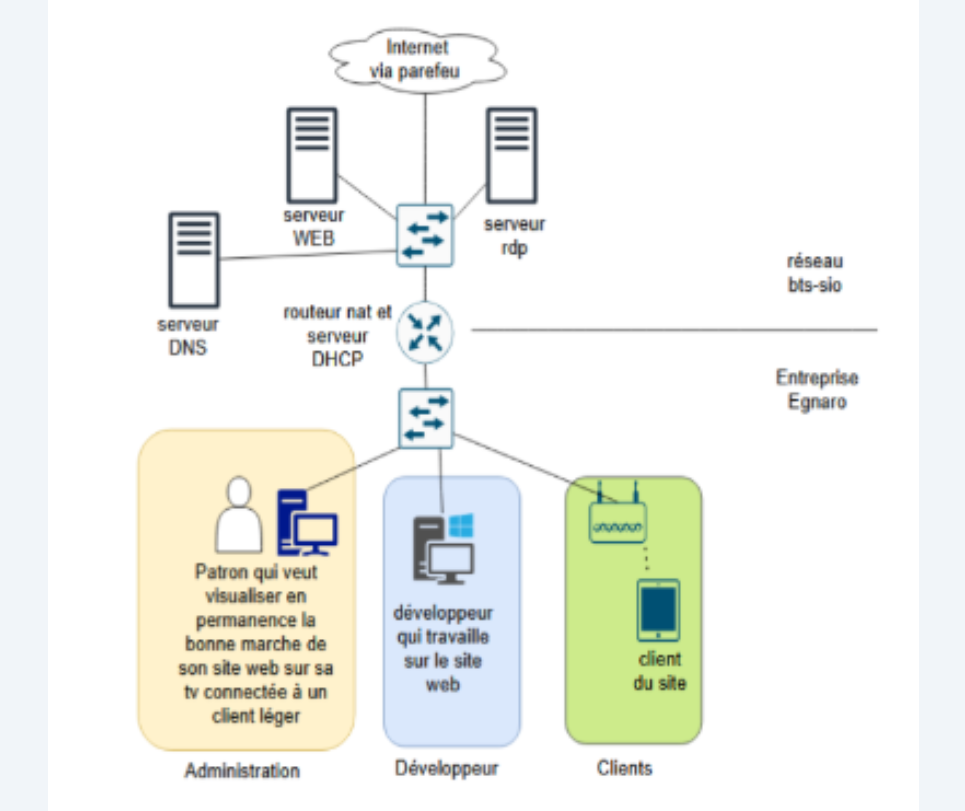
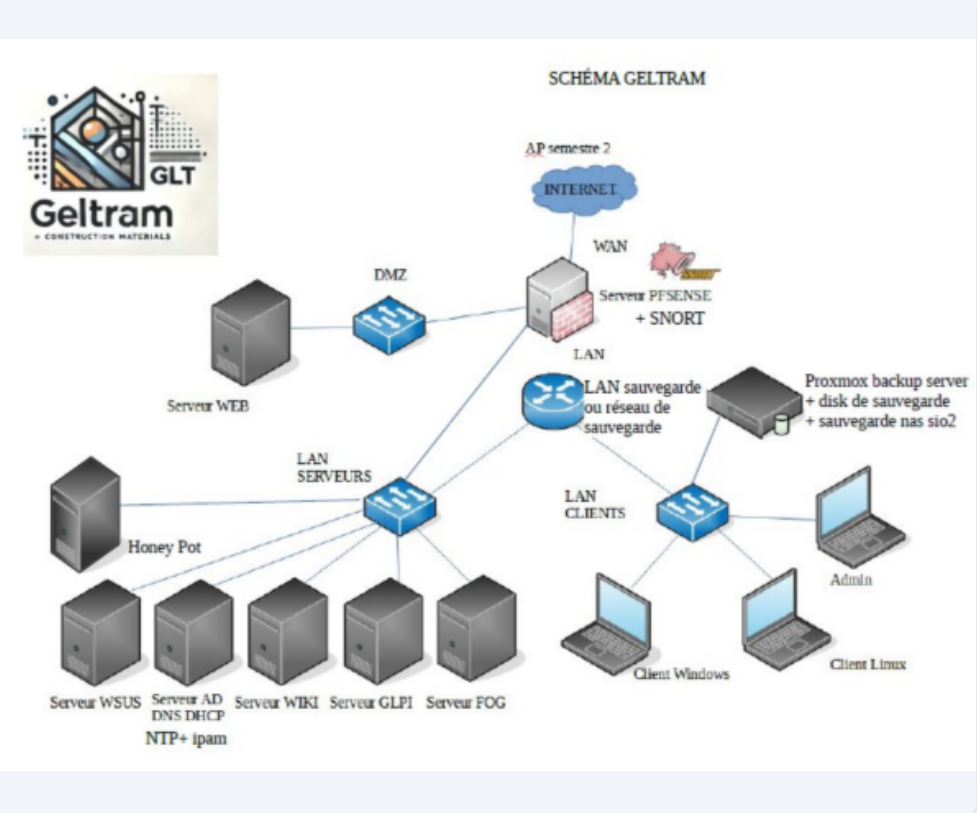
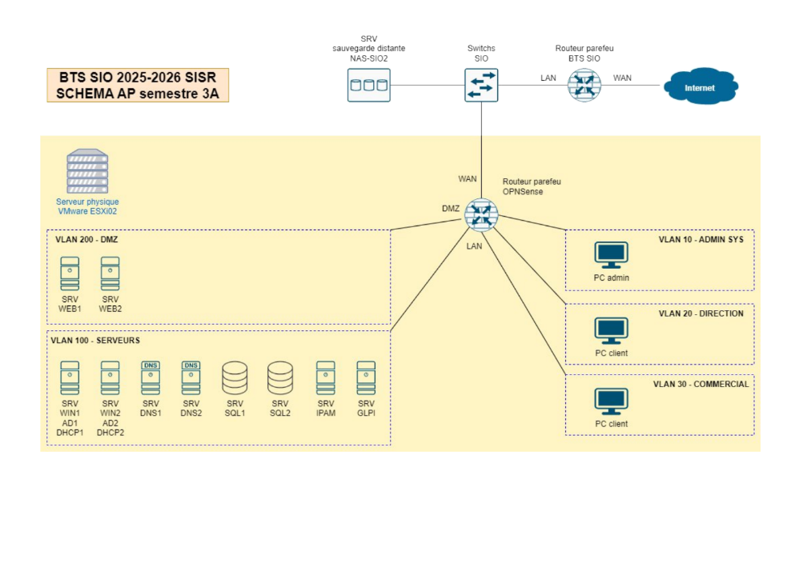

PROJET EGNARO
Projet de 1ère année - Semestre 1. Conception d'une infrastructure réseau de base pour l'entreprise Egnaro (Administration, Développeur, Clients).

Projet de 1ère année - Semestre 1. Conception d'une infrastructure réseau de base pour l'entreprise Egnaro (Administration, Développeur, Clients).

Projet de 1ère année - Semestre 2. Architecture réseau avancée avec zone DMZ, Serveurs LAN, routeur pare-feu PFSense et intégration de SNORT.

Projet de 2ème année. Architecture virtualisée multi-sites (Paris/Rennes) sous VMware ESXi, pare-feu OPNSense, segmentation en VLANs et supervision.